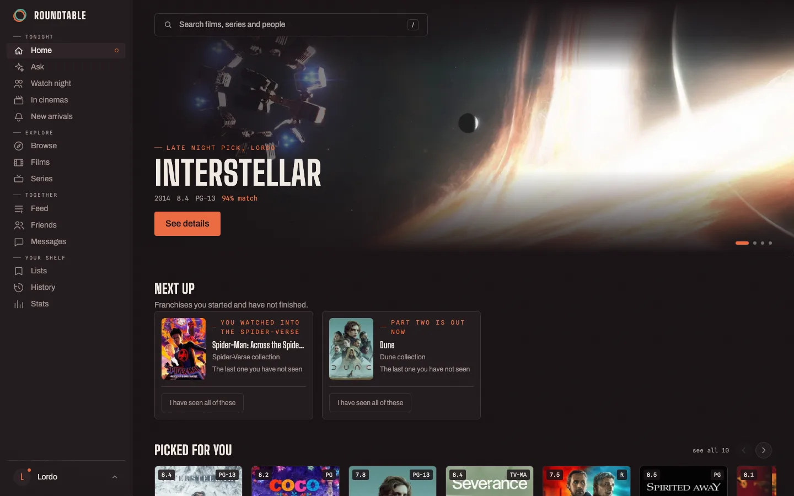

Self-hosted
A film and series tracker you run yourself. It knows which of your subscriptions has something, in your country, tracks series episode by episode, and settles what to put on when there is more than one of you.
Get it on GitHub How to run it

Five subscriptions and still nothing to watch. Films leaving the cinemas before you heard about them. Where to watch it in one app, what it is rated in another, your list in a third, and none of them working properly outside a handful of markets.
| Your services, your country | Availability that covers Shahid, OSN+, STARZPLAY and Watch It alongside Netflix and the rest. Suggestions are limited to what you actually subscribe to, unless you turn that off. |
|---|---|
| Series by the episode | A season grid, what you have seen, and what to put on next. Only episodes that have aired count, so a show still running reads as up to date rather than half finished. |
| Watch nights | Invite people. Everyone suggests into one queue and votes, the suggestions blended from all of your tastes. Whatever wins lands in every history at once. |
| Cinema alerts | One notification a week before a film opens where you are, which is enough notice to make a plan with someone. |
| An assistant that researches | Ask for everything related to a film and it searches the web, reads what it finds, verifies every title against the database, and answers with the watch order and one press to save it as a list. The steps you see are the real tool calls. When it cannot ground an answer, it says so. |
| No AI service required | Recommendations run on embeddings generated locally. Point it at an OpenAI-compatible endpoint with a tool-calling model if you want the assistant; everything else works fully without one. |
You need Docker and a free TMDB key. Everything else has a working default.
git clone https://github.com/1ordo/roundtable
cd roundtable
cp .env.example .env # then put your TMDB key in it
docker compose up -d
Open http://localhost:8080 and make the first account,
which becomes the admin. Registration closes behind it.
Most of it works and is tested. The browser extension is the exception: importing your watchlist works on Netflix, Prime Video and OSN+, but automatic play detection is written for eight services and confirmed on none of them. It is marked that way in the README rather than discovered the hard way, and it is the best place to help.
GNU AGPL v3. Run it, change it, fork it, host it for other people. If you offer a modified version over a network you publish your changes too. The name and logo are reserved separately.